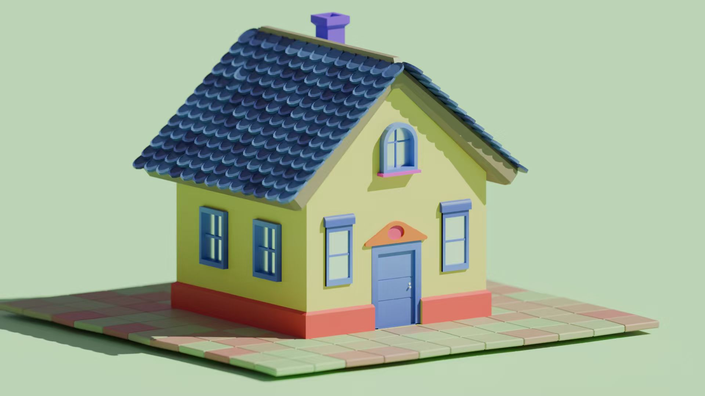
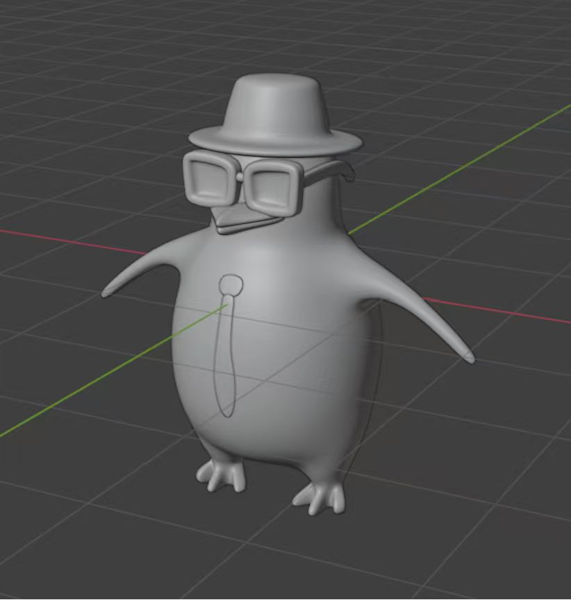
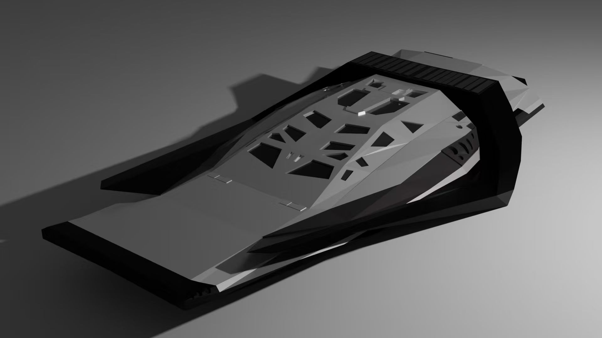

This is my first website, which I made in year 10. It was a great experience for me to learn how to design and code a website. I used HTML and CSS to create this website, and I also learned how to use GitHub Pages to host it online. This website is about iceland, where I most want to go to.

This is my first model that I made. This little house was my first time to make something with a targeted purpose. I leart lots of things from this little house, like rotation, moving, formation, coloring and rendenring.

This is one of my school work. During I was making this model, I leart about round. I knew how to make my model smooth and how to carve on it. For the result, the 3D printer pinted it out successfully and I got the real model punguin.

This is the model that just for my interesting. This is a spaceship in Interstellar called--ranger. I made this spaceship because Interstellar was my favourite movie and I was interested in it's external air fluid structure construction.
This is my first time to make an animation. I followed a tutorial on the youtube to learn the basics of animation in Blender and made the model. Then, I followed the teacher's steps to make the models move. In the end, I finished my first animation.
This is my second animation, which is easier than the first one. When I was making this animation, I realized how easy to make a big scene like this, because I just need to make a small part of the ocean and then copy it to make the whole ocean and the foam is automatically generated